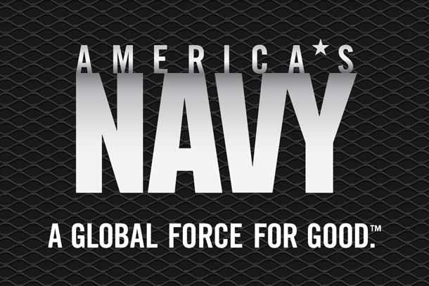

-
My Future Career



Right now I am thinking about Enlisting into the Military specificaly into the Navy depending on the score I get when I take the Asvab. I plan to first go into the Military to be able to get the money to go to college after, my future career is to work with fashion designers and be able to work with my own projects on creating my own collection.In the Navy I would like to be able to work with others to help other people specifcaly being able to learn a new languge
-
How long would the job in the Navy be/How can i apply my career in the Navy to fashion design
The job that i would like to take in the Navy would to be able to learn a new language and be able to help others by translating the important imformation.Doing my research on that specific job, it takes about a year of training to over come this career. I can apply my career in the Navy into Fashion Design to work with other states or ocuntries and be able to learn how to speak their language when i'm showing my collection
-
How i could use coding in Fashion Design

.